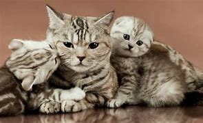
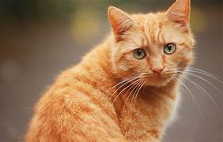
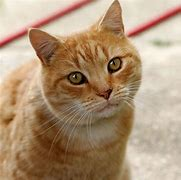
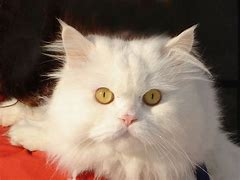
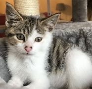
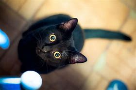
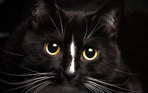
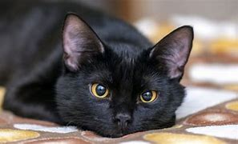
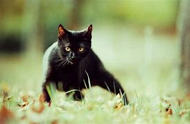

Mājas kaķis jeb kaķis, arī domesticētais kaķis ir mazs, plēsīgs kaķu dzimtas zīdītājs, kurš pieradināts pirms vairāk nekā 9500 gadiem.Kaķis ir ļoti populārs mājdzīvnieks, jo palīdz cilvēkam cīnīties ar dažādiem kaitēkļiem, piemēram, pelēm, čūskām un pat skorpioniem. Mājas kaķa tēviņus dēvē par runčiem, bet mātītes — par kaķenēm. Ir zināms, ka kaķi medī vairāk nekā 1000 dažādu citu dzīvnieku sugu. Tiem var iemācīt izpildīt dažādas vienkāršas komandas. Kaķi spēj iemācīties manipulēt ar dažādiem vienkāršiem mehānismiem, piemēram, tie māk atvērt durvis, izmantojot durvju rokturus. Kaķis, iespējams, ir populārākais mājas mīlulis pasaulē; kopumā pasaulē ir aptuveni 600 miljoni kaķu. Saskaņā ar ģenētiskajiem pētījumiem, visi mājas kaķi ir domesticēti no meža kaķa pasugas Āfrikas savvaļas kaķa pussugas. Lai gan visu veidu meža kaķi var krustoties savā starpā, nav nekādu liecību, ka mājas kaķa filoģenēzē būtu saistība ar citu meža kaķa pasugu.
        | Garspalvainie kaķi | Pusgarspalvainie kaķi | Āzijas kaķi | Īsspalvainie kaķi |
|---|---|---|---|
| Eksotiskais kaķis | |||
| Persijas kaķis | |||
| Pusgarspalvainie kaķi | Amerikas garspalvu kaķis | ||
| Pusgarspalvainie kaķi | Amerikas īsspalvu kaķis | Pusgarspalvainie kaķi | Meinkūns |
| Pusgarspalvainie kaķi | Norvēģijas meža kaķis | ||
| Pusgarspalvainie kaķi | Ragdolls | ||
| Pusgarspalvainie kaķi | Svētais birmas kaķis | ||
| Pusgarspalvainie kaķi | Sibīrijas kaķis | ||
| Pusgarspalvainie kaķi | Turcijas Angoras kaķis | ||
| Pusgarspalvainie kaķi | Turcijas Vana kaķis | ||
| Āzijas kaķi | Balinēzijas kaķis | ||
| Āzijas kaķi | Garspalvu orientālais kaķis | ||
| Āzijas kaķi | Īsspalvu orientālais kaķis | ||
| Āzijas kaķi | Siāmas kaķis | ||
| Āzijas kaķi | Seišelu garspalvu kaķis | ||
| Āzijas kaķi | Seišelu īsspalvu kaķis | ||
| Īsspalvainie kaķi | Abesīnijas kaķis | ||
| Īsspalvainie kaķi | Bengālijas kaķis> | ||
| Īsspalvainie kaķi | Burmilla | ||
| Īsspalvainie kaķi | Britu īsspalvainais kaķis | ||
| Īsspalvainie kaķi | Burmas kaķis | ||
| Īsspalvainie kaķi | Kartēzijas kaķis | ||
| Īsspalvainie kaķi | Kornvolas rekss | ||
| Īsspalvainie kaķi | Kimriks | ||
| Īsspalvainie kaķi | Devonas rekss | ||
| Īsspalvainie kaķi | Eiropas īsspalvu kaķis | ||
| Īsspalvainie kaķi | Vācijas rekss | ||
| Īsspalvainie kaķi | Japānas bobteils | ||
| Īsspalvainie kaķi | Kurīlijas īsspalvu bobteils | ||
| Īsspalvainie kaķi | Kurīlijas garspalvu bobteils | ||
| Īsspalvainie kaķi | Ēģiptes mau | ||
| Īsspalvainie kaķi | Osikats | ||
| Īsspalvainie kaķi | Krievijas zilais kaķis | ||
| Īsspalvainie kaķi | Sniegakurpju kaķis | ||
| Īsspalvainie kaķi | Sokoke | ||
| Īsspalvainie kaķi | Somālijas kaķis | ||
| Īsspalvainie kaķi | Sfinkss |